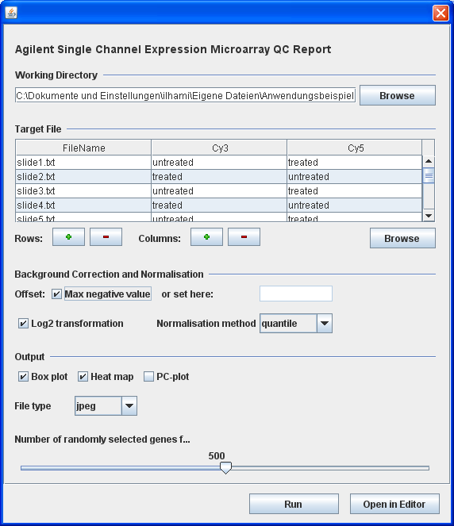

Getting started!
RGG requires Java version 5 or later. It can be used in two different ways:
1. Standalone
Please download the Zip-archive. After extracting it, click twice on RGG.jar. It will open a file dialog to let you choose an RGG file. An RGG file is a file, which describes the GUI of an R script through XML tags (see Documentation). If the RGG file is valid, a GUI will be displayed, that can be used like any other graphical user interface. Every GUI has two buttons, "Generate" and "Save". "Generate" will display the R code, "Save" saves the generated R code to a file for later execution of this code in R. See the screenshots below
2. As an R package within JGR
The second way to use RGG is installing it as an R Package. Because RGG only runs in a Java environment, JGR is needed as a connection to R. JGR is a Java GUI for R. For installation of JGR, please visit their homepage
After you have successfully installed JGR, please execute the following R code inside JGR. It will install RGG for you.
install.packages("rgg",repos="http://r-forge.r-project.org")
Then load the RGG package by calling "library(RGG)". This will add a menu "RGG" on the menubar of JGR window (see the screenshot below).

To open an RGG file click on the submenu "Load" of "RGG". Let's load the same RGG file, which we have opened in the stand-alone version.

The user interface is the same except for the two buttons at the bottom: "Run" and "Open in Editor". The "Run" button generates the corresponding R code and sends it to R for execution. "Open in Editor" will open the generated R code in the JGR editor, which uses R specific highlighting.